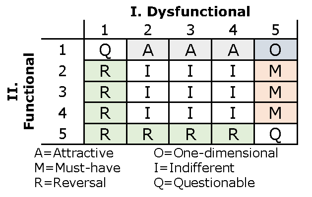
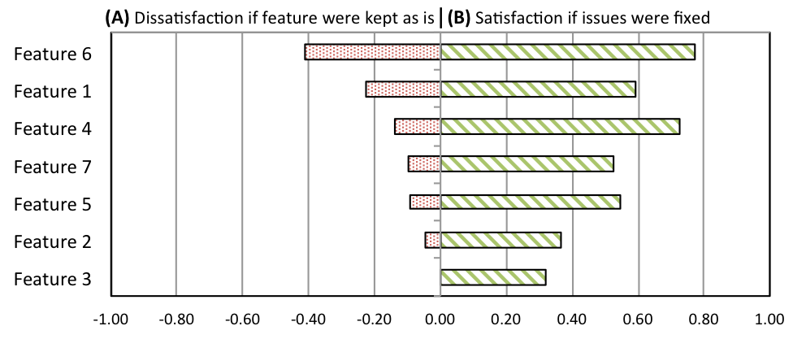

Kano Model for Prioritizing Usability Issues
This project is done with cooperation of the product team at Platfora.Motivation
When following a rapid and iterative user-centered design approach, product design teams in the software industry regularly document and prioritize usability issues. Traditionally, priorities of usability issues are determined according to usability metrics such as issue frequency as noted in user studies. A major limitation of this user research approach is that it failed to consider the quality of customers' perception and satisfaction (e.g. balancing delight and frustration) impacted by the usability issues.
Research Outcomes
Using Kano model to help prioritizing usability issues through evaluating their impact on customer satisfaction
The Kano’s model of customer satisfaction aims to provide information about the quality of user perceptions on system functionality. It enriches the traditional linear view of the relationship between user satisfaction and fulfillment of product features by mapping this relationship into five categories (see the graph below for a illustration):
- Attractive features provide satisfaction when fully achieved, but do not cause dissatisfaction when not fulfilled
- One-dimensional features provide satisfaction when fully achieved, also cause dissatisfaction when not fulfilled
- Must-have features are taken for granted when fulfilled but result in dissatisfaction when not fulfilled
- Indifferent features do not affect customer satisfaction
- Reversal features cause dissatisfaction when implemented
We explored a user research method that applied the Kano model to evaluate the impact of usability issues on customer satisfaction. Specifically, the method focuses on a survey administered after a usability study. For each feature affected by usability issues, the survey asks participants to (1) review the feature and the related usability issues and then (2) answer the following two questions:
- If the functionality of this feature were kept as in the current version, how would you feel?
- I would be delighted to find it this way
- Of course, I would expect it to be this way
- I am neutral
- I dislike it but I can live with it this way
- It must not be this way
- If we fixed the above mentioned usability issues about this feature, how would you feel?
- I would be delighted to find it this way
- Of course, I would expect it to be this way
- I am neutral
- I dislike it but I can live with it this way
- It must not be this way
The following Kano category mapping table specifies a single participant's perception about a feature.
A Customer Satisfaction (CS) Coefficient can then be calculated based on the percentage of users in each Kano category. The following graph is an example of the CS Coefficient results about a feature set in Platfora. This complementary actionable user research data can help the customer facing teams to refine resource allocation to fix issues that greatly reduce customer frustration while increasing customer delight.
Related Publications (email me if you would like a copy)
- Cheng, J., Mulholland, J., & Shankar, A. (2016). Using the Kano Model to Balance Delight and Frustration for an Enterprise Application. In Proceedings of the 2016 CHI Conference Extended Abstracts on Human Factors in Computing Systems - CHI EA ’16 (pp. 3021–3027). New York, New York, USA: ACM Press. doi:10.1145/2851581.2892284 (Poster - Acceptance Rate: 43%)
Download poster